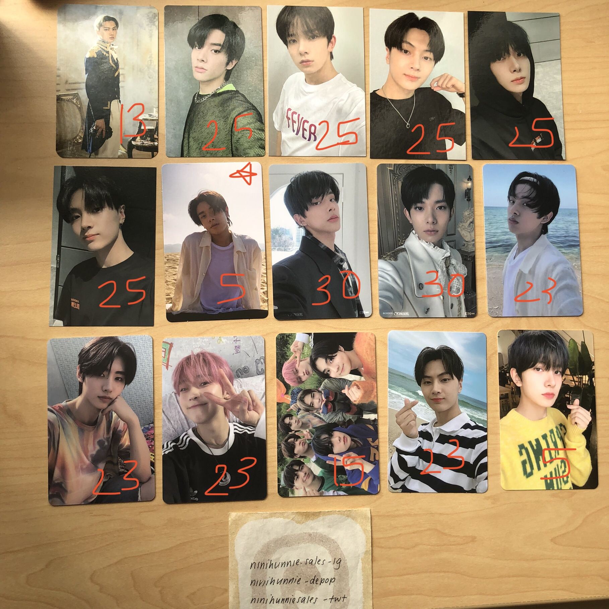
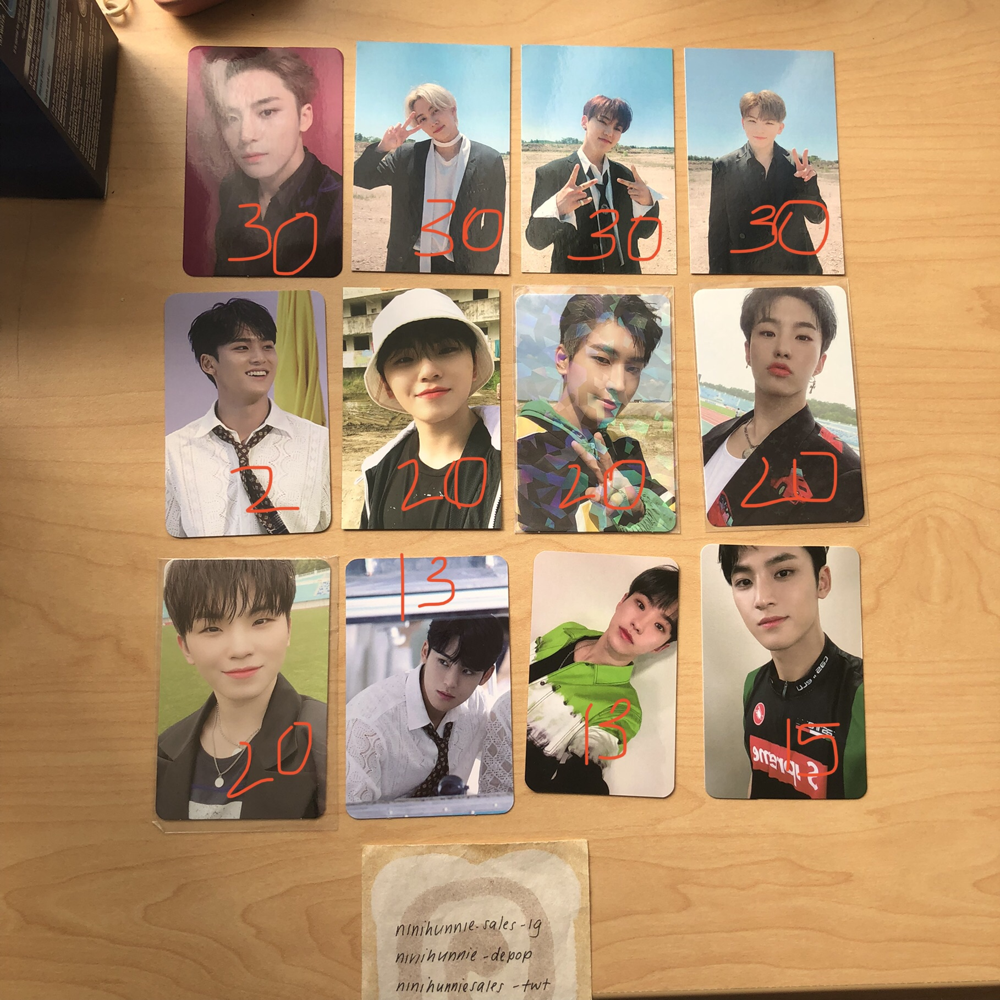
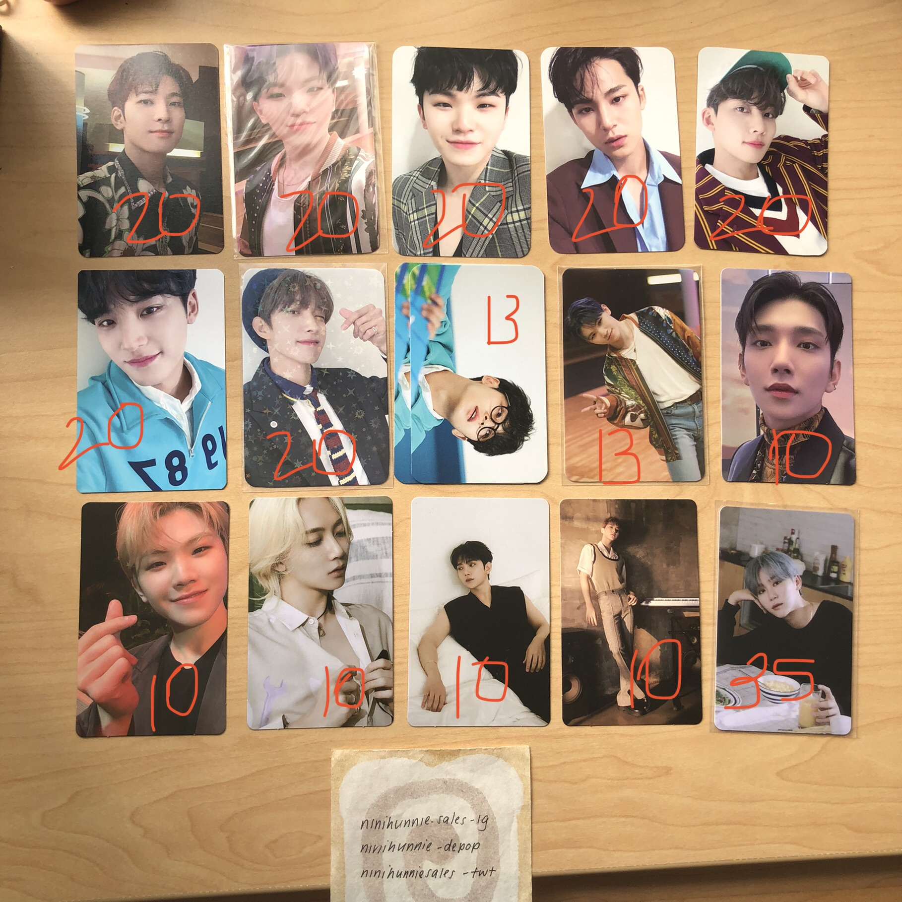
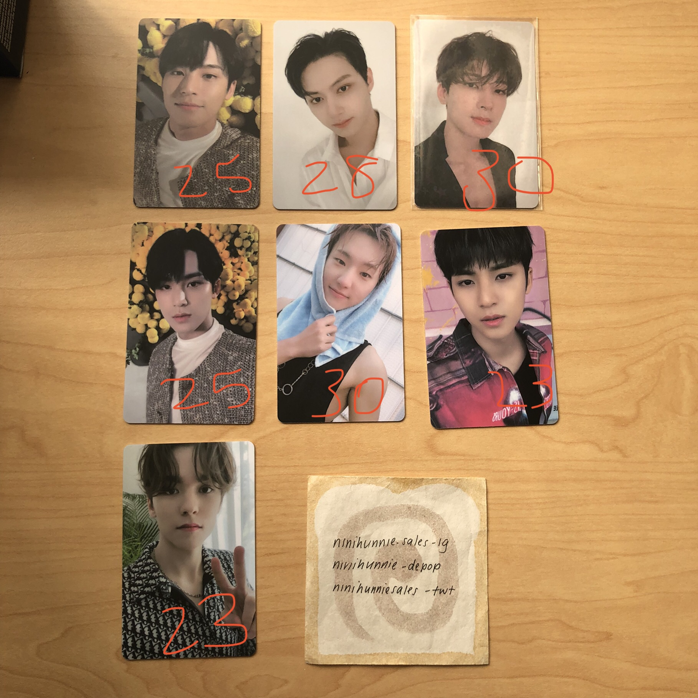
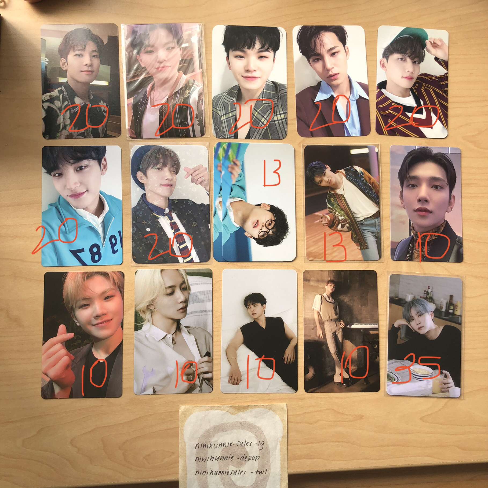
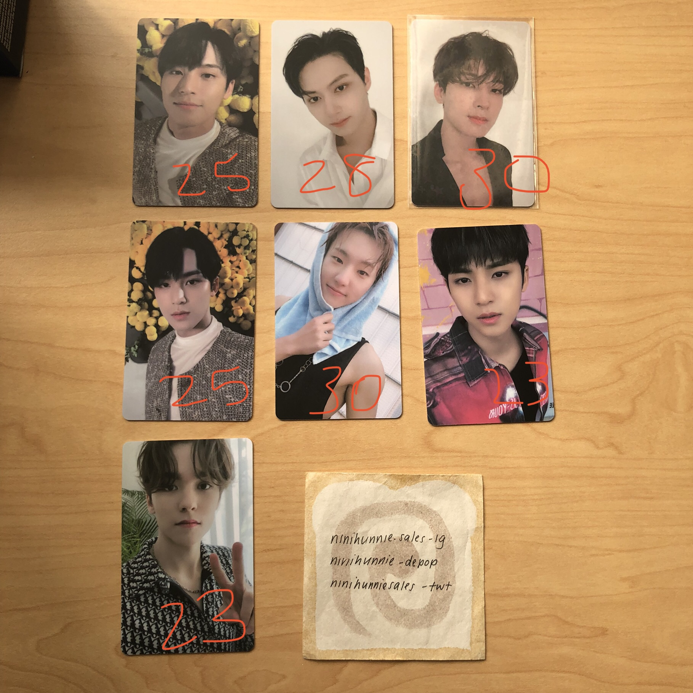

Elva Cheung
Finance Concentration from the University of California, Riverside. I am currently residing in Riverside, California, however, I am from the Bay Area and San Francisco area. I am a first gen college student and the first member of my family to go into this field. I am the oldest of 2 siblings and was born and raised in California. I enjoy reading and watching movies. I also really enjoy working in groups and bonding with my colleagues and friends. I choose to do business because not only is that major versatile in the sense that many jobs can be obtained with a business degree, but it also helps with networking skills. This degree can also give me a chance to do business and work with people from different backgrounds and from places all around the world. The skills learned with a business degree are also really good life skills that we need to help us in life and in other jobs such as communication. Even though I had a tough time deciding on what concentration I wanted to do, finance was the concentration that was the most interesting for me. It was interesting to see how money worked and all the aspects that revolved around money and personal finance. I was an intern last summer and is continuing my internship this summer at the same company shadowing a senior in the finance department. Even though I chose finance, I am also interested in accounting because it seems interesting and I enjoyed all the courses that I took that were about accounting. My aunt is also an accountant at one of the top four companies in the accounting field, so she gave me an insight about accounting and what it takes to become an accountant.
Enter bio here
Enter bio here
Experience
Tutor
• Worked 1 on 1 with children in math and English
• Planned award ceremonies
• Communicated with managers and parents
CSA Intern
• Helped plan club events
• Shadowed current staff to gain experience
• Communication skills with other businesses and staff members
• Planned family events
Education
UC Riverside
University of California Riverside
University of California Riverside
Portfolio







